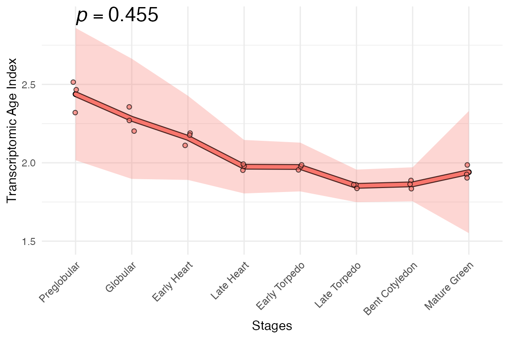
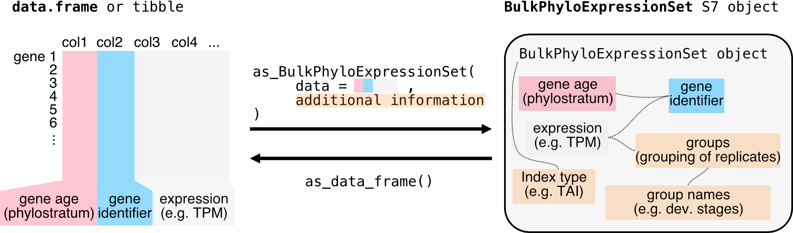

1. Install myTAI
# from CRAN
install.packages("myTAI", dependencies = TRUE)
# or, the developer version containing the newest features
devtools::install_github("drostlab/myTAI")
# make sure myTAI version is > 2.0.0
packageVersion("myTAI")
2. Run myTAI
library(myTAI)
# obtain an example phylo-expression object
data("example_phyex_set")
# plot away!
myTAI::plot_signature(example_phyex_set) 
or with your
BulkPhyloExpressionSet dataset.

3. Enjoy 🍹
(and don’t forget to cite)
Want to use myTAI on your data?
→ click on the icons 🧚 below.
📊 Bring your datasets into
myTAI.
📈 Statistical analyses → learn about our
permutation tests.
🛡️ Check the robustness of your
patterns.
🔨 Destroy the hourglass! →
gaTAI functions to extract the genes that drive your
evolutionary transcriptomic patterns.
📚 Read about gene age inference
(phylostratigraphy) and transcriptome age index.
🌄 Check out our gallery of example plots
+ functions.
Want to learn even more?
→ check out our vignettes under the Articles tab or the Reference tab for a list
of functions and their documentation.